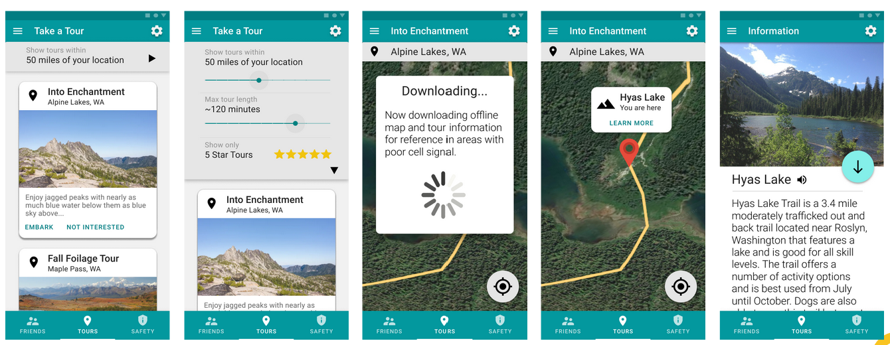

HIKING BUDDY
Background
Studies show that women age 45 and up has been a growing market in solo travels. Their motivations include the desire to learn, challenge themselves, and find a sense of identity and autonomy (Pereira 2020).
The Problem
Especially for women, traveling solo introduces a number of safety concerns. A bad fall, debilitating injury, or wrong turn could leave the solo traveler without help.
Solution
Hiking Buddy helps to ensure the safety of women travelers by matching them with potential hiking companions.
Research
We interviewed several women travelers of this age group, all of whom expressed concern over their safety.
A She magazine poll of 1000 women found 41 percent agreed that violence against women is a serious threat to their solo travels.
Design
Login and User Verification
Upon opening the app, users either log-in or register for an account.
All users are required to verify that they are a real person by snapping a photo of their ID. The ID's name and photo are then tested against the account's associated information.
Find a Friend
The user is shown a feed of other users to either "like" or "pass". When two users like each other, they match.
Matched users can then chat with each other, leading to potential hiking buddies!
Find a Tour
Users can then search for near-by hikes, referred to the app as "tours". Tours can be filtered by distance, length, and user rating.
Selecting a tour will download an offline map so that the user will not get lost, even without cell service.
Safety Alerts
Finally, the user can opt into custom safety alerts.
Safety alert content includes nearby crime and severe weather conditions.